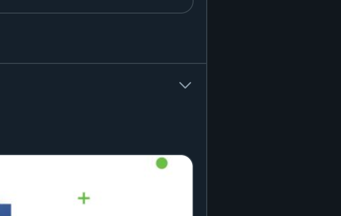

Analyser et améliorer l'expérience utilisateur d'une fonctionnalité.
Rethinking UX est un workshop qui a comme objectif d'observer des fonctionnalités d'un service, d'en identifier les problèmes et de proposer ainsi qu'argumenter une proposition d'amélioration.
Notre choix
Cette année, pour le workshop Rethinking UX, nous avons eu le choix entre cinq services.

Après beaucoup de réflexion et d’hésitation quant au choix du service sur lequel nous allions travailler, notre choix s'est porté sur Twitter. Ce qui était intéressant, c'était que la moitié du groupe n'utilisait pas du tout ce service, ce qui allais nous permettre d'avoir une analyse plus intéressante.
Pour nous, il s'agit d'un réseau social permettant de s'informer, communiquer, partager et promouvoir rapidement des idées entre utilisateurs au moyen de messages dit Tweet, composé de 280 caractères.
Fonctionnalités
Notre utilisation
Nous avons listé la manière dont chacun d’entre nous utilisait Twitter afin de voir quelles sont les fonctionnalités les plus importantes et donc probablement les plus utilisées.
→ Suivre des personnes dans des domaines qui nous intéressent; → inspiration (art, design et web); → partage et mise en avant de proposition de jobs (freelance); → promotion et visibilité; → contacter des marques (dm); → développement d'une communauté.
Démarche
J’ai choisi de travailler sur une des fonctionnalités principales de Twitter, l’abonnement. Elle permet de suivre un autre utilisateur sur la plate-forme et d'être notifié lorsqu'il tweet ou retweet quelque chose. Cette fonctionnalité est simple et pourtant, elle pourrait avoir une meilleur expérience.
Le problème
Lorsqu'on suit une personne sur Twitter c'est bien entendu car son contenu nous intéresse. Le problème la dedans c'est qu'on s'abonne rarement à une personne pour tout son contenu, il est fréquent qu'une partie des ses tweets ne nous intéresse pas et pour peu que la partie qui ne nous intéresse pas est la plus favorisé, souvent on se désabonne.
C’est un problème que je rencontre personnelement et après en avoir discuté avec d'autres personnes, je me suis rendu compte que c'était vraiment un problème régulier chez les utilisateurs de Twitter.
Il est possible d'indiquer lorsqu'un tweet ne nous intéresse pas, de cette manière, Twitter va en prendre compte et sur base des tweets indiqués comme telle, l’algorythme va essayer d'améliorer notre fil en éliminant ce type de contenu.
User Testing
Le scénario de ce test est de rechercher une compte et de s’y abonner. Ensuite, se rendre sur le fil d’actualité et indiquer un tweet qui ne nous intéresse pas.
Le test m’a permis de me rendre compte que le processus était vraiment fastidieux et si il faut faire ça pour chaque tweet indésirable, c’est vraiment long. En plus, une fois la page rafraichi le tweet précedement indiqué est de nouveau proposer et le fil n’est d’aucune manière amélioré.
Voir le test en imagesAméliorations
C'est durant cette phase du projet que j'ai cherché à trouver une bonne solution, qui permettrait de vraiment avoir du contenu qui nous intéresse. Pour ce faire, j'ai d'abord analysé quelques service qui ressemblait à Twitter et qui proposait des fonctionnalités similaires.
Comparatif
- Follow des thématiques précises;
- suggestion du contenu.
- Difficile de gérer ses abonnements.

- Follow des hashtags;
- abonnements facilement gérablent.
- Hashtags utilisés pas toujours en rapport avec l'image.

- Follow des hashtags.
- Hashtags peu utilisé;
- hashtags pas mit en avant;
- hashtags suivient automatiquement, sans notra accord;
De manière général, chaque service propose une façon de générer plus précisément ses abonnements et donc d’avoir un contenu plus ou moins adaptés à nos intérêts.